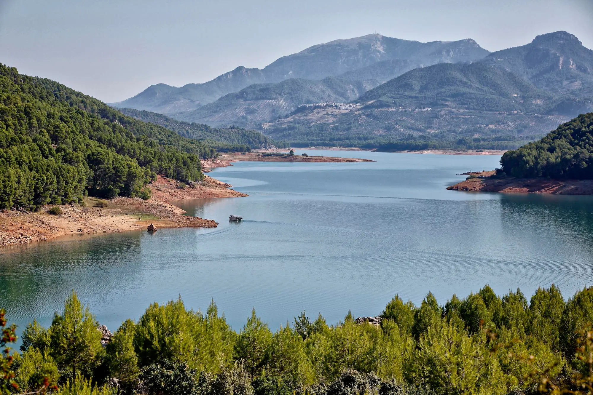

Por todos es conocido lo que significa para mí, mi pueblo y no es de extrañar. Aunque la gran mayoría lo conocéis, otros, seguro que habéis oído hablar del pueblo de Pedro, o de "El Puente", pero os contamos algo más. Su nombre se debe al puente romano que cruza el río Guadalimar (afluente del Guadalquivir), y donde se puede realizar un precioso paseo a la orilla del río, a la vez que disfrutar también del puente nuevo (construido más tardíamente en la época árabe). En este entorno se encuentra también uno de los edificios más emblemáticos de nuestro pueblo, el de Unicaja, con una arquitectura que recuerda a la del afamado Gaudí, pero que nada tiene que ver. “El Puente”, cuenta con la Parroquia San Isidro Labrador, patrón del pueblo, y cuya festividad (15 de mayo) es también conocida por muchos de vosotros.
Os invitamos a disfrutar de este bonito enclave, y a descubrir el sin fin de esculturas que se esconden por sus calles gracias al museo al aire libre que cada año celebra una nueva edición y que deja en El Puente una nueva escultura que no suele dejar indiferente.
En materia de cultura, es digno de mencionar que musicalmente "El Puente cuenta" con diversas agrupaciones como son la Banda de música San Isidro Labrador, Coral Polifónica Faustino Serrano, el grupo folclórico Fuente Vieja, y cantantes como Ray o Juanlu Campayo. También en Puente de Génave, se puede visitar La sala de exposiciones de La Vicaria, donde son frecuentes las exposiciones de reconocidos artistas locales como son Santiago Idañez, o Jesús Fernández Escobar. Muchos de los presentes en ese día, tienen un nexo en común con Pedro y es la música.
A tan sólo 6 km de Cortijos Nuevos, se encuentra la localidad de Hornos. Se trata de un pueblo con un encanto especial, construido sobre un tajo y alrededor de su castillo del que convergen sus singulares callejuelas.- Dentro del castillo, se encuentra el centro de divulgación de astronomía y planetario Cosmolarium. También Hornos cuenta con una joya del gótico, la parroquia de la Asunción, a escasos metros de poder deleitarse con la mejor vista panorámica del embalse del Tranco y del Parque Natural de la Sierra de Segura desde la terraza panorámica de la cafetería pub Adarve.
Segura forma parte de la red de los pueblos más bonitos de España, reconocimiento más que merecido. Está situado en un cerro, custodiado por el pico más alto de la Sierra de Segura, el famoso Yelmo, y culminado por su imponente castillo árabe, desde el que se puede contemplar la más espectacular vista del Parque Natural. En Segura de la Sierra vivió el ilustre poeta Jorge Manrique, cuya obra más notable es Coplas por la muerte de su padre.
Popularmente conocido como El Tranco de Beas es un embalse situado en el Parque natural de las Sierras de Cazorla, Segura y Las Villas, al noreste de la provincia de Jaén, España.
Donde se puede disfrutar de diferentes actividades como un paseo en el barco solar, restaurante con comida típica de la Sierra de Segura evolucionada, o un divertido paseo en pedalina acuática.
Os aconsejamos encarecidamente la visita a uno de los mejores restaurantes de comida serrana, , donde podréis degustar platos típicos serranos como las migas, el ajoatao, el cordero segureño, y cómo no, sus famosas pizzas y postres acompañados del mejor servicio.